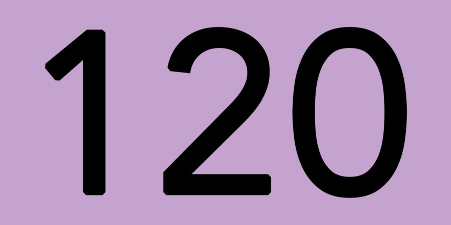

Le Centre B.O.K.S.S Balnéo Ostéo Kiné Sport Santé vous propose tous les services de ces différentes thérapeutiques. La Balnéo, L'Ostéo, La Kiné, Le Sport Santé.
Le Masseur-Kinésithérapeute MK est le praticien en charge du renforcement musculaire, de l'endurance et de la mobilité des personnes ayant des limitations fonctionnelles. Pour cela, il pratique des mobilisations et réalise avec les patients des exercices afin de leur permettre de retrouver une meilleure condition physique.

7 Boulevard Georges Méliès, 94350 Villiers-sur-Marne
Moyens de transport:
RER - Noisy-le-Grand (Mont d'Est) (ligne A)

RER - Gare de Bry-sur-Marne (ligne A)
Bus - La Fontaine (lignes 120 et 520) 
Informations pratiques:
Rez-de-chaussée
Accès handicapé
Parking gratuit
Lundi : 07h00 - 20h00
Mardi : 07h00 - 20h00
Mercredi : 07h00 - 20h00
Jeudi : 07h00 - 20h00
Vendredi : 08h00 - 20h00
Samedi : FERME
Dimanche : FERME